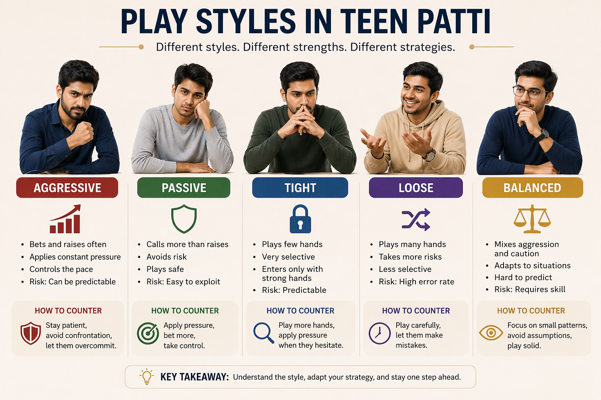

🪶 Introduction
In Teen Patti, every player has a style — whether they realize it or not.
Some players bet aggressively, play cautiously, or constantly change behavior.
👉 Understanding play styles allows you to:
- Predict actions
- Adjust your strategy
- Gain a consistent advantage
🎯 This guide will help you identify different play styles and learn how to respond effectively.
🖼️ Play Styles Overview

🎯 What Are Play Styles?
Play style is the consistent way a player approaches the game, including:
- How often they bet
- How much risk they take
- How they react under pressure
👉 Instead of focusing only on cards, skilled players focus on player tendencies.
🧠 1. Aggressive Play Style
Characteristics:
- Bets frequently
- Raises often
- Applies pressure constantly
Strengths:
- ✔ Forces opponents to fold
- ✔ Controls the pace of the game
Weaknesses:
- ❌ Can become predictable
- ❌ High risk if misused
🎯 How to Counter Aggressive Players:
- ✔ Stay patient
- ✔ Avoid unnecessary confrontations
- ✔ Let them overcommit
👉 Aggressive players often defeat themselves if you stay calm.
🧠 2. Passive Play Style
Characteristics:
- Calls more than raises
- Avoids risk
- Plays safe
Strengths:
- ✔ Low risk
- ✔ Stable play
Weaknesses:
- ❌ Easy to read
- ❌ Misses opportunities
🎯 How to Counter Passive Players:
- ✔ Apply pressure
- ✔ Increase bets strategically
- ✔ Take control of the round
👉 Passive players often fold under pressure.
🧠 3. Tight Play Style
Characteristics:
- Plays very few hands
- Only enters with strong situations
- Highly selective
Strengths:
- ✔ Strong decision quality
- ✔ Low mistake rate
Weaknesses:
- ❌ Predictable
- ❌ Misses marginal opportunities
🎯 How to Counter Tight Players:
- ✔ Play more hands against them
- ✔ Apply pressure when they hesitate
👉 When they act, take them seriously — but don't over-respect them.
🧠 4. Loose Play Style
Characteristics:
- Plays many hands
- Takes more risks
- Less selective
Strengths:
- ✔ Unpredictable
- ✔ Hard to read
Weaknesses:
- ❌ High error rate
- ❌ Often loses over time
🎯 How to Counter Loose Players:
- ✔ Play more carefully
- ✔ Let them make mistakes
- ✔ Avoid unnecessary risk
👉 Loose players often lose by overplaying.
🧠 5. Balanced Play Style
Characteristics:
- Mixes aggression and caution
- Adapts to different situations
- Hard to predict
Strengths:
- ✔ Flexible
- ✔ Difficult to exploit
Weaknesses:
- ❌ Requires high skill
- ❌ Hard to maintain consistency
🎯 How to Counter Balanced Players:
- ✔ Focus on small patterns
- ✔ Avoid assumptions
- ✔ Play solid and disciplined
👉 Against balanced players, you must rely on fundamentals.
🧠 6. Adaptive Play Style (Advanced)
Characteristics:
- Changes strategy based on opponents
- Adjusts in real time
- Avoids fixed patterns
Strengths:
- ✔ Highly effective
- ✔ Very difficult to read
Weaknesses:
- ❌ Requires experience
- ❌ Mentally demanding
🎯 How to Counter Adaptive Players:
- ✔ Stay consistent
- ✔ Avoid revealing patterns
- ✔ Focus on long-term strategy
👉 You must outthink them, not outplay them.
🧠 7. Identifying Play Styles Quickly
Watch for:
- Frequency of betting
- Reaction to pressure
- Risk tolerance
Quick classification:
| Behavior | Likely Style |
|---|---|
| Constant betting | Aggressive |
| Frequent folding | Tight |
| Calls often | Passive |
| Random actions | Loose |
🧠 8. Adjusting Your Own Play Style
The best players don't stick to one style.
You should:
- ✔ Adapt based on opponents
- ✔ Change pace when needed
- ✔ Avoid becoming predictable
👉 Flexibility is a major advantage.
🧠 9. Mixing Strategies (Key Skill)
If you always play the same way:
👉 You become easy to read
Solution:
- Occasionally change behavior
- Vary your decisions
- Control your image
👉 Unpredictability = power
⚠️ Common Mistakes in Play Styles
- Using only one style
- Not adapting to opponents
- Overusing aggression
- Ignoring table dynamics
❓ FAQ
What are the main Teen Patti play styles?
Aggressive, passive, tight, loose, balanced, and adaptive.
How do I counter an aggressive player?
Stay patient, avoid unnecessary confrontations, and let them overcommit. They often defeat themselves.
Can I change my play style during a game?
Yes, adapting your style based on opponents and table dynamics is a key skill for advanced players.
🧾 Summary
Understanding play styles helps you:
- Read opponents quickly
- Adjust your strategy
- Avoid predictable behavior
- Improve long-term performance
🎯 Final takeaway:
👉 Play styles are not fixed — the best players adapt constantly